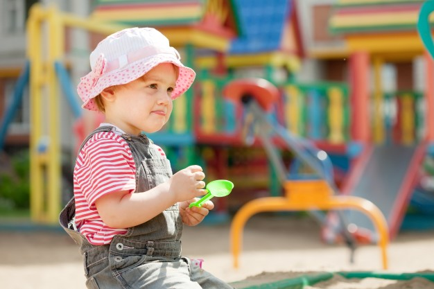

15 Oktober 2019



Anak-anak di usia balita memang paling mudah terkena penyakit. Meski hanya dianggap sebagai penyakit ringan, tentu tidak boleh diremehkan begitu saja. Moms harus tetap waspada dan memberikan pengobatan yang tepat, tergantung dari penyakit yang diderita Si Kecil.
Untuk itu, Moms perlu mengetahui penyakit apa saja yang paling sering dialami anak usia balita. Maka tidak hanya nutrisi saja yang harus dipenuhi agar tubuh anak kebal penyakit, tetapi juga pengobatan agar Si Kecil bisa lekas sembuh dan beraktivitas kembali.
1. Batuk - Pilek
Salah satu penyakit yang paling umum dialami balita adalah batuk dan pilek (influenza). Penyebab yang paling umum karena anak terinfeksi virus. Kondisi ini biasanya disertai demam sedang, juga sering bersin, hidung yang berair, sakit tenggorokan, hingga rasa nyeri di sekujur tubuh.
Sebagai pertolongan pertama, Moms bisa memberikan air putih dengan porsi lebih banyak dari biasanya. Kemudian, ajak Si Kecil istirahat cukup agar daya tahan tubuhnya kembali baik. Selanjutnya, bawa anak ke dokter untuk mengetahui kondisi penyakit yang memang masih terbilang ringan atau memiliki dampak lebih buruk bagi kesehatan Si Kecil.
2. Diare
Masalah pencernaan juga menjadi penyakit yang cukup sering diderita anak balita, seperti diare. Penyebab umumnya adalah infeksi virus, alergi, atau keracunan makanan. Gejalanya terlihat ketika Si Kecil buang air besar lebih sering dan berbentuk cair.
Moms bisa memberikan oralit serta memberikan minum air putih yang banyak pada Si Kecil untuk menormalkan pencernaannya, sekaligus untuk menggantikan cairan tubuh. Selain itu, perhatikan saat anak bermain agar tidak sembarangan memasukkan benda atau makanan ke dalam mulutnya.
3. Demam
Demam sendiri bukanlah penyakit, namun kondisi ketika tubuh Si Kecil sedang melakukan perlawanan terhadap infeksi. Jika anak mulai mengalami kenaikan temperatur tubuh, Moms bisa mulai memberikan kompres dengan air hangat untuk menurunkannya.
Selain sebagai gejala pertama suatu penyakit, demam juga bisa terjadi saat Si Kecil sedang mengalami tumbuh gigi atau setelah menerima imunisasi. Ini adalah normal terjadi, kecuali suhu tubuh anak mencapai 38 derajat celcius, Anda harus segera membawanya ke dokter untuk pemeriksaan lebih lanjut.
 Mengungkapkan hubungan tekanan darah tinggi dan sakit gigi
Mengungkapkan hubungan tekanan darah tinggi dan sakit gigi
Mengungkapkan hubungan tekanan darah tinggi dan sakit gigi
Mengungkapkan hubungan tekanan darah tinggi dan sakit gigi
Mengungkapkan hubungan tekanan darah tinggi dan sakit gigi
Mengungkapkan hubungan tekanan darah tinggi dan sakit gigi
Mengungkapkan hubungan tekanan darah tinggi dan sakit gigi
Mengungkapkan hubungan tekanan darah tinggi dan sakit gigi
Mengungkapkan hubungan tekanan darah tinggi dan sakit gigi
Mengungkapkan hubungan tekanan darah tinggi dan sakit gigi
 2019 LIANUS Corporation. All right reserved.
2019 LIANUS Corporation. All right reserved.